New resources
My newest resources appear here first. The list updates automatically.
48 resources
Mozambico – Italian Reading Comprehension Worksheet (Scheda): Cloze & Listening

Mouse – Italian Reading Comprehension Worksheet (Scheda): Cloze & Listening
Mountain bike – Italian Reading Comprehension Worksheet (Scheda didattica)

Motore a vapore – Italian Reading Comprehension Worksheet (Scheda didattica)

Motore – Italian Reading Comprehension Worksheet (Scheda): Cloze & Listening

Motocicletta – Italian Reading Comprehension Worksheet (Scheda didattica)

Mosè – Italian Reading Comprehension Worksheet (Scheda): Cloze & Listening
Mosella – Italian Reading Comprehension Worksheet (Scheda): Cloze & Listening
Mosa – Italian Reading Comprehension Worksheet (Scheda): Cloze & Listening

Moscovium – Italian Reading Comprehension Worksheet (Scheda): Cloze & Listening
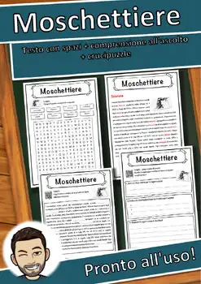
Moschettiere – Italian Reading Comprehension Worksheet (Scheda didattica)
Moschea – Italian Reading Comprehension Worksheet (Scheda): Cloze & Listening
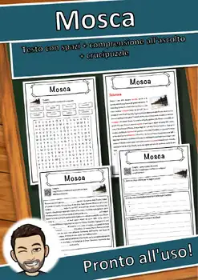
Mosca – Italian Reading Comprehension Worksheet (Scheda): Cloze & Listening
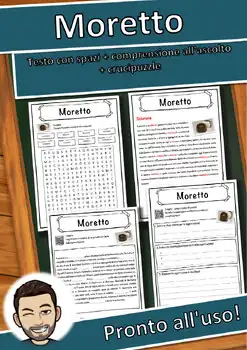
Moretto – Italian Reading Comprehension Worksheet (Scheda): Cloze & Listening

Morbillo – Italian Reading Comprehension Worksheet (Scheda): Cloze & Listening
Monti Altaj – Italian Reading Comprehension Worksheet (Scheda didattica)
Montenegro – Italian Reading Comprehension Worksheet (Scheda): Cloze & Listening
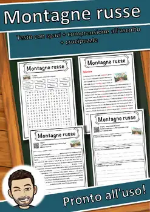
Montagne russe – Italian Reading Comprehension Worksheet (Scheda didattica)
Montagne Rocciose – Italian Reading Comprehension Worksheet (Scheda didattica)
Monster – Italian Reading Comprehension Worksheet (Scheda): Cloze & Listening
Monsone – Italian Reading Comprehension Worksheet (Scheda): Cloze & Listening
Monocoltura – Italian Reading Comprehension Worksheet (Scheda didattica)

Monociclo – Italian Reading Comprehension Worksheet (Scheda): Cloze & Listening
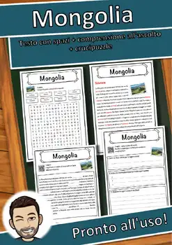
Mongolia – Italian Reading Comprehension Worksheet (Scheda): Cloze & Listening
Moneta – Italian Reading Comprehension Worksheet (Scheda): Cloze & Listening
Monachesimo – Italian Reading Comprehension Worksheet (Scheda didattica)
Mollusca – Italian Reading Comprehension Worksheet (Scheda): Cloze & Listening
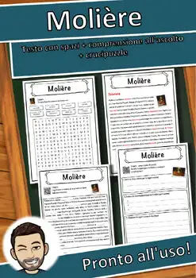
Molière – Italian Reading Comprehension Worksheet (Scheda): Cloze & Listening
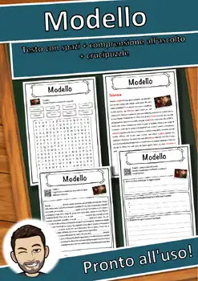
Modello – Italian Reading Comprehension Worksheet (Scheda): Cloze & Listening
Modellismo ferroviario – Italian Reading Comprehension Worksheet
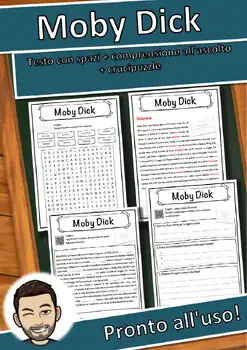
Moby Dick – Italian Reading Comprehension Worksheet (Scheda): Cloze & Listening
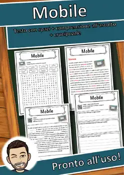
Mobile – Italian Reading Comprehension Worksheet (Scheda): Cloze & Listening
Mitologia romana – Italian Reading Comprehension Worksheet (Scheda didattica)
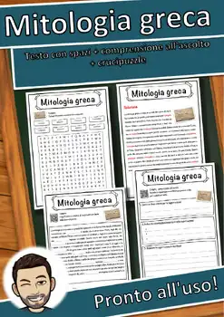
Mitologia greca – Italian Reading Comprehension Worksheet (Scheda didattica)

Mito – Italian Reading Comprehension Worksheet (Scheda): Cloze & Listening
Missouri – Italian Reading Comprehension Worksheet (Scheda): Cloze & Listening
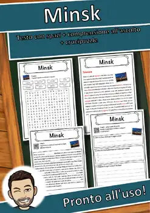
Minsk – Italian Reading Comprehension Worksheet (Scheda): Cloze & Listening
Minorca – Italian Reading Comprehension Worksheet (Scheda): Cloze & Listening
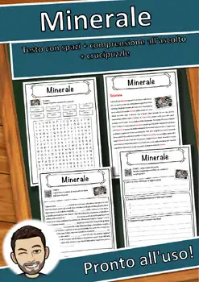
Minerale – Italian Reading Comprehension Worksheet (Scheda): Cloze & Listening
Minareto – Italian Reading Comprehension Worksheet (Scheda): Cloze & Listening
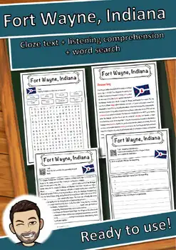
Fort Wayne, Indiana – Worksheet: cloze text, listening and word search
Milza – Italian Reading Comprehension Worksheet (Scheda): Cloze & Listening

Milione – Italian Reading Comprehension Worksheet (Scheda): Cloze & Listening
Milano – Italian Reading Comprehension Worksheet (Scheda): Cloze & Listening
Miguel de Cervantes – Italian Reading Comprehension Worksheet (Scheda didattica)
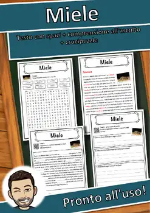
Miele – Italian Reading Comprehension Worksheet (Scheda): Cloze & Listening
Microscopio – Italian Reading Comprehension Worksheet (Scheda didattica)
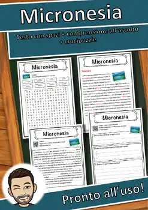
Micronesia – Italian Reading Comprehension Worksheet (Scheda): Cloze & Listening
No resources found – try a different search term or filter.